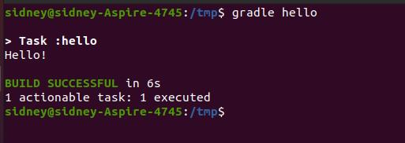

Gradle.
O Gradle tem como propósito principal gerenciar sistemas de build.
Assim como o Maven, o Gradle é facilmente configurável, a diferença é que o Gradle é configurado utilizando json e o Maven xml.
O Gradle e o Maven não são diretamente rivais, inclusive podem se combinar e trabalhar juntos.
Os downloads das dependências tem suporte a Ivy e Maven.
No Gradle podemos tanto gerenciar builds de projetos como criar tarefas isoladas para automatizar processos.
Configurando e testando Gradle.
Dependendo do Sistema Operacional que estiver utilizando, o Gradle pode ser instalado
baixando o binário, via Sdkman ou via instalador. No caso vamos instalar no Ubuntu 20.04
via apt-get:
$ sudo add-apt-repository ppa:cwchien/gradle
$ sudo apt update
$ sudo apt -y install gradle
Existem 3 arquivos utilizados no Gradle: build.gradle, settings.gradle e gradle.properties.
O build.gradle é o arquivo principal, ele vai orquestrar todas as tarefas que necessitam ser executadas.
O settings.gradle é um arquivo de configuração do projeto para deixar mais organizado seu build.
O gradle.properties é um arquivo de configuração do Gradle, além de capturar as configurações do JDK também.
Vamos criar um exemplo de uma task simples, crie um arquivo “build.gradle” e adicione o código:
Execute o comando: gradle hello

Podemos automatizar um build Java utilizando Gradle. Vamos fazer um teste baixando um exemplo: git clone https://github.com/spring-guides/gs-gradle.git
Entre no diretório: gs-gradle/complete
O arquivo build.gradle terá a seguinte estrutura:
1- apply plugin: Estrutura sistêmica utilizada;
2- mainClassName: Nome completo da classe principal;
3- repositories: Repositório das dependências;
4- jar: Estrutura do arquivo jar criado pela aplicação;
5- sourceCompatibility/targetCompatibility: Compatibilidade da versão Java;
6- dependencies: Lista de dependências utilizadas.
Para iniciar o build, baixando as dependências e preparando seu ambiente, execute o comando: gradle build
Conclusão.
Uma opção de automatização de processos para quem não quer utilizar Maven ou Ant diretamente. O Gradle pode ser uma boa opção para quem quer somente criar pequenos processos de automatização de rotinas.